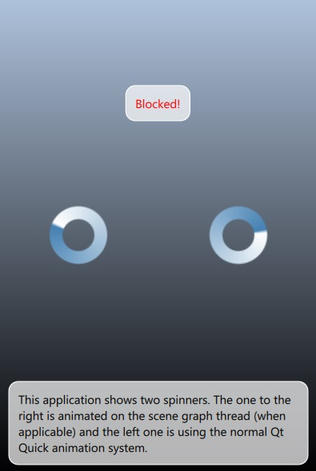

Scene Graph - Threaded Animation
Shows benefits of custom items animating independently of the main thread while using the threaded render loop of Qt Quick.

This example shows the fundamental concept behind the Animator types, by implementing a custom item that effectively animates itself by not relying on the standard Qt Quick animation framework driven on the main thread.
The left and right spinners should behave identically under normal conditions. However, once the example blocks the main thread by peforming some heavy operation, it will become noticeable that the left spinner is not animating smoothly anymore.
Note: This example should be run with the threaded render loop of Qt Quick. This is the default in most cases. There are no positive effects when using the basic render loop, because there everything, including all rendering, happens on the main thread.
Applications without custom QQuickItem implementations can get the same benefits by using one of the Animator types, such as XAnimator or OpacityAnimator from QML. Whereas when building custom items, similar results can be achieved by following the example's implementation.
See also Qt Quick Scene Graph.